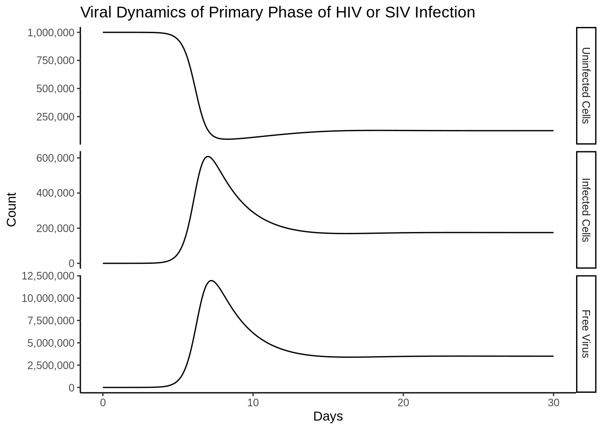

library(deSolve)
library(tidyverse)2 The Basic Model of Virus Dynamics
Set Up the ODE
base_ode <- function(time, state, parameters){
with(as.list(c(state, parameters)),{
dx <- lambda - d*x - beta * x * v
dy <- beta * x * v - a * y
dv <- k * y - u * v
return(list(c(dx,dy,dv)))
})
}
t <- seq(0,30,.1)
params <- c(
lambda =1e5,# Uninfected cell production rate
d = .1, # Cell Death Rate
a = .5, # Infected Cell Death Rate
beta = 2e-7, # "Rate Constant"
k = 100, # Virus productin from Infected cell
u = 5 # Free Virus lifestapn
)Guessing Initial values from a graph
x0 <- params["lambda"][1]/params["d"][1]
init <- c(x = unname(x0),
y = 1, v = 1)
out <- ode(init, t, base_ode, params)
out_df <- as_tibble(as.data.frame(out))Funny side note is that the differences in the scales are almost immediately reproduced as in the book.
compartment_names <- c("Uninfected Cells",
"Infected Cells",
"Free Virus")
p <- out_df %>%
setNames(c("time", compartment_names)) %>%
gather(compartment, value, -time) %>%
mutate(compartment = factor(compartment, compartment_names)) %>%
ggplot(aes(time, y = value))+
geom_line()+
facet_grid(rows = vars(compartment),scales = "free_y")+
theme_classic()+
labs(
title = "Viral Dynamics of Primary Phase of HIV or SIV Infection",
x = "Days",
y = "Count"
)+
scale_y_continuous(labels = scales::comma_format(accuracy = 1000))
p 